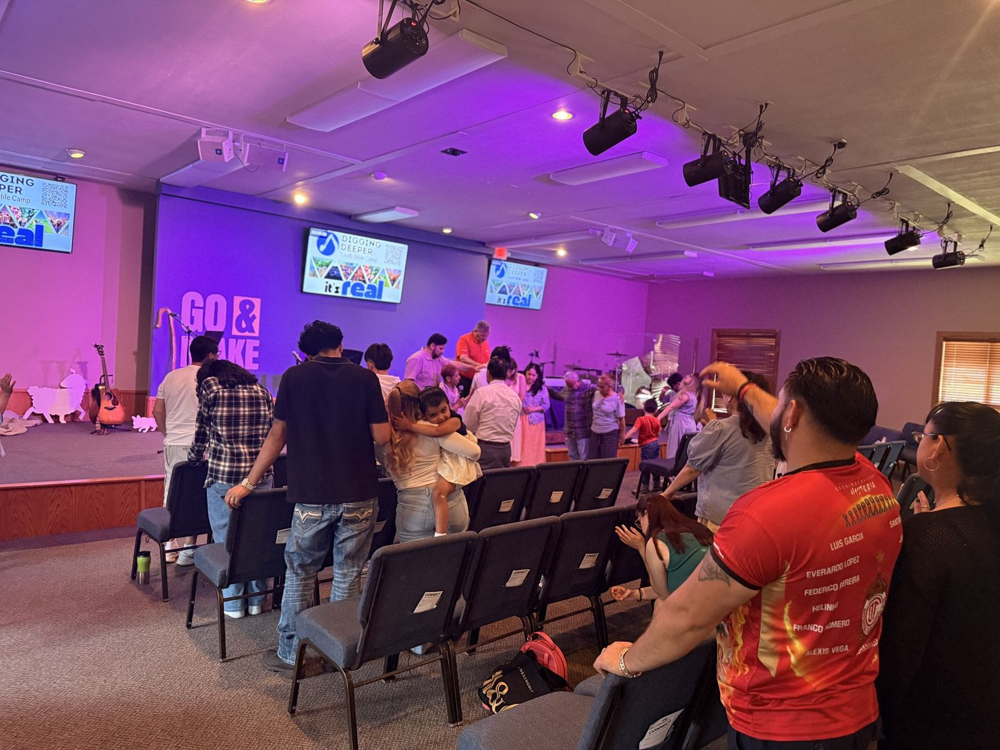
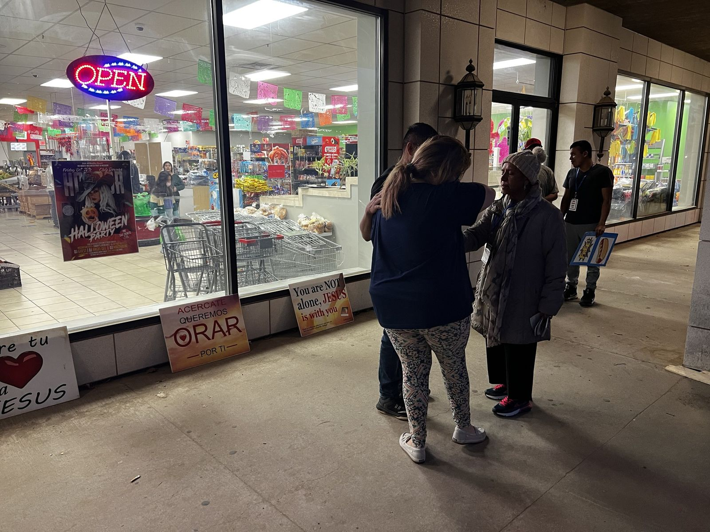

Dream Global <> Impact Local
We train planters, plant churches, and mobilize the church.
We serve as a family alongside Michigan's Hispanic church, and we train those who will plant in other places.
Helping people find their way back to God.

- Hundreds
of planters trained with the Omega Course around the world
- Dozens
of countries where the tool has borne fruit
- Churches
planted in the United States and Latin America
- Families
sent out, serving as church planters
The Omega Course figures are its global fruit. The rest is our family's own journey.
Our approach
Everything we do runs through three verbs
- 01
We train
Planters trained with CESI's Omega Course: Bible, character and practice, with a mentor walking beside them.
- 02
We plant
New churches born healthy, with local leadership from the start and a careful handoff.
- 03
We mobilize
We awaken the existing church to pray, send, welcome, go, and mobilize others.
The ministry
Three fronts, one mission
-

CESI: planter training
CESI USA trains planters with the Omega Course, a tool proven in hundreds of lives and dozens of countries.
Explore the course -

Church planting
From Sendero to Sturgis and Kalamazoo: we plant, support churches, and seek the next field in prayer.
See the planting work -

González on Mission
Stories from the field: what God is doing, told by a family that serves together.
Follow the mission
Our journey
From Sturgis to Kalamazoo, churches that now exist
We planted a church in Sturgis that continues today under local leadership. We support Iglesia Yo Soy in Kalamazoo and train planters with CESI's Omega Course.
The González Family · Kalamazoo, Michigan

Then the world will know that you sent me and have loved them even as you have loved me.
More from MovilizarMe
Tools and resources
Tools to mobilize
Live interpretation for churches, workshops and practical resources to serve others.
See the toolsLibrary
A Christian library with a catalog and a reader, for study and preparation.
Explore the LibraryPodcast
Missions and technology: short conversations about God's mission and today's tools.
Listen to the podcast
Stay connected
The mission is sustained by praying together
We share a González on Mission prayer letter with stories from the field and reasons to intercede. No noise, no spam: just the mission.